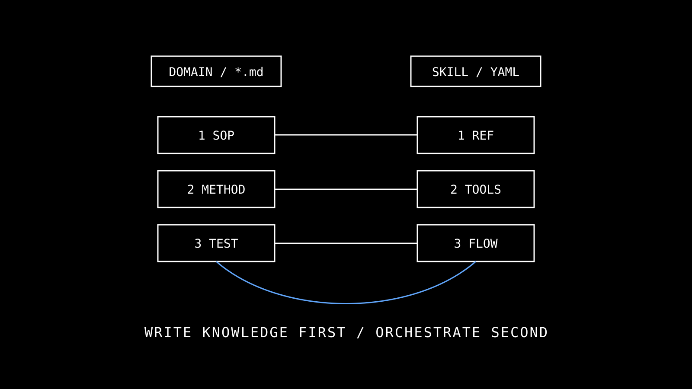
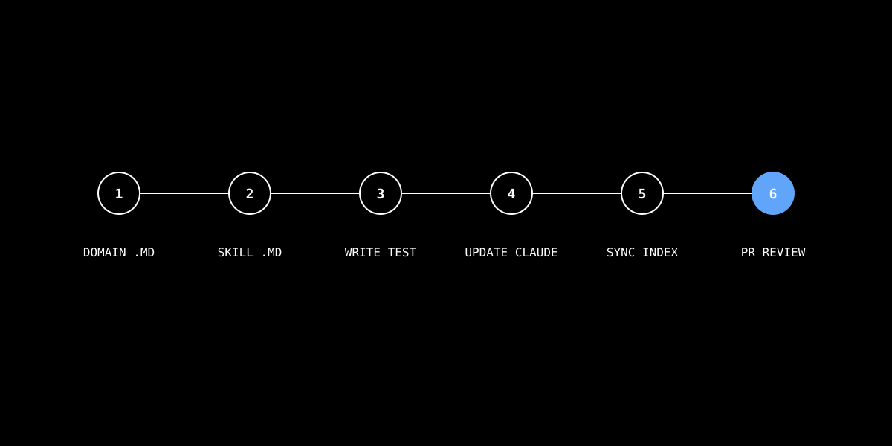

這份模板把新貢獻分三種：純 SOP / 既有工具的新 workflow / 真正缺工具的能力擴充。目標讓 BIM method 可審、可維護、可被多個 AI client 共用。下方含三選一決策樹 + 撰寫骨架 + 6 步驟停車場淨高完整範例。

大多數新需求其實是「知識補完」不是「工具擴充」。先判斷對，省下重造輪子的時間。
新法規條文、新計算公式、新例外處理 → 寫 domain/*.md 即可。不必建 Skill。
例：「《建技 §99》新增規定 X 條件下排煙窗計算改 Y」
跨多 tool 編排 + 觸發頻率高 → 寫 Skill 引用 Domain，不複製 SOP 到 Skill body。
例：「想自動跑採光→排煙→碰撞檢查並打包報告」
Revit API 沒有對應能力 → 先寫 RFC / issue 確認可行，才動 MCP tool 新增。
例：「想要工具直接回傳 IFC4 格式 schema」
把純 SOP 升 Skill → metadata 膨脹、context window 浪費。
把 workflow 寫死進 tool → 工具肥大、跨情境難複用。
沒先看 Revit API 能不能做就寫 tool → 寫到一半發現 API 不支援。
所有 domain/*.md 都遵守這個結構。frontmatter 由 /qaqc Phase 6 lint 檢核。詳見 frontmatter-standard.md。
---
title: parking-clearance-check
description: 停車位淨高與車道寬度檢核 SOP（建技 §60）
type: compliance
triggers:
- parking
- clearance
- 停車淨高
- >210cm
inputs:
- element ids from get_field_values
- room types from get_rooms_by_level
references:
- building-code-tw.md#article-60
---
# Goal
明確定義本 SOP 的範圍與目的。
# Method
1. 列出需要的 tool fields（不要假設）
2. 寫公式與閾值
3. 列出例外（哪些情境不檢、哪些要替代條件）
4. 多重條件時用決策樹清楚畫出來
# Output
回傳 PASS / FAIL / NEEDS_REVIEW 三態（不是只 PASS/FAIL）。
含 evidence（用了哪些 element id、哪個欄位、套了哪個公式）。
# Edge cases
- 機車位的 clearance 規則不同
- 無障礙車位有更高要求
- 雙層機械停車位特殊計算
1. 公式寫在 Domain 不寫在 Skill——法規修一次只改一份 SOP。
2. 列出所需 tool fields——避免 LM 補不存在的欄位。
3. 明確說「不檢什麼」——比說「檢什麼」更重要（防誤檢）。
Skill body 大多 ≤ 50 行。長 Skill 通常 = 把 SOP 重複寫進去 = 違反知識複用原則。
---
name: parking-check
description: 停車淨高與車位數量檢核。觸發於關鍵字「停車」「車位淨高」「parking」「clearance」「機車位」「無障礙車位」。
trigger-keywords:
- 停車
- parking
- clearance
---
# Workflow
1. 讀對應 Domain SOP（一定要讀，不要憑記憶套）
- 淨高檢查 → domain/parking-clearance-check.md
- 數量檢核 → domain/parking-space-review.md
2. 查實際模型資料（用 tool 取，不要編造）
- get_rooms_by_level(level=X) 取停車空間
- query_elements_with_filter(category="Parking") 取車位
3. 套 SOP 方法（domain 怎麼寫就怎麼算）
- 不要簡化、不要憑直覺、不要跳步驟
4. 回報結果
- PASS / FAIL / NEEDS_REVIEW + 證據
- 若 FAIL → 建議套 A/B/C/D 框架（指向 spectrum-decision）
從零開始建一個新 compliance SOP。用真實案例（這是 2025-Q4 實際做過的，現已上線）。

domain/parking-clearance-check.md
依 Section 02 骨架填入。完整公式：淨高 ≥ 2100mm；機車位 ≥ 1800mm；無障礙 ≥ 2400mm。
# Method
1. Get all rooms with type ∈ {駐車場, parking, 停車空間}
2. For each room: measure ceiling height at room center
3. Classify: regular / 機車 / 無障礙
4. Apply threshold per class
5. Output FAIL list with evidence.claude/skills/parking-check/SKILL.md
把 workflow 加上「淨高檢查」分支。若該 Skill 還不存在則新建。
避免工具 schema 漂移。建一個 tests/parking-clearance.smoke.ts，跑一遍確認 round-trip 通過。
CLAUDE.md 觸發表
加入這行到 Domain 表：
| 停車, 車位淨高, clearance, >210cm | `domain/parking-clearance-check.md` |在 domain-index Section 02 Compliance 加入新 card，含 trigger tags 與反查 Skill。在 skills-index 對應 Skill 加上 domain-link。
/claude-md-sync 與 /qaqc
同步驗證 CLAUDE.md 與作業檔雙向一致。qaqc Phase 6 會檢核 frontmatter 完整性。
CODEOWNERS 收到 PR 後對照這份檢核。沒過不 merge。
references/building-code-tw.md 條號？WebSocket contract（CommandName / Parameters / RequestId）？ExternalEventManager 在 UI thread？Transaction？/claude-md-sync 確認雙向一致？/qaqc 全綠？